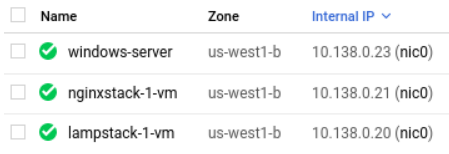

Security through obscurity is a practice that is highly discouraged, yet unfortunately, sometimes used. wfuzz attempts to automatically scan directories for common names site operators often use for storing sensitive files.
Begin by ensuring each of the web servers you have set up (WFP1, WFP2, lampstack, nginxstack, windows-server). Make a note of their Internal IP addresses as they will be used to perform scans on.

Then, bring up a shell on the Kali VM which comes with wfuzz. Perform the following command on the Kali VM for each web server, substituting the address 10.x.y.z with the internal IP address each server has been assigned.
wfuzz -c -w /usr/share/wfuzz/wordlist/general/common.txt --hc 404 http://10.x.y.z/FUZZ
The command will automatically substitute names from its dictionary for the "FUZZ" string. In this case, the command will examine top-level directories on each web server.
- Take a screenshot output for each that includes your OdinID in the output.
nmap is an industry-standard tool that provides a more-generic network mapping function by having the ability to scan a multitude of network services. Typically, on the defender end, it is used to perform up-to-date inventories on deployed assets.
On Google Cloud Platform and Compute Engine, all VMs that are brought up in a particular region are added to the same private subnetwork and assigned a private IP address on it. For example, in the figure below, the subnetwork shared starts with a prefix of 10.138.0 for each address.

One can give nmap a single IP address, a range of IP addresses or a CIDR prefix to scan as an argument. For the example, to do a basic scan on the machines above, I could do the following:
nmap 10.138.0.20-23
Start by performing a basic scan of the web servers you have brought up via their internal IP addresses.
nmap <target_IP_addresses>
- Identify servers that expose ports other than
sshandhttpand include them in your lab notebook.
nmap can attempt to perform a fingerprinting operation on operating system and server software.
- Show a screenshot of the output when enabling this option.
nmap -sV <target_IP_addresses>
- Based on the reported versions on the WFP1 VM, how old do you think the distribution being used is?
nmap can perform a deeper fingerprinting operation on servers as well.
- What additional kinds of information is returned when adding the
-Aflag versus the previous?
nmap -A <target_IP_addresses>
nmap contains a scripting engine (NSE) for customizing how it performs scans on targets. A large library of pre-existing scripts written in Lua are included in its default distribution.
Scripts are classified under a variety of categories such as discovery, vuln, brute, malware and exploit. One can list all of the scripts for a particular category via:
nmap --script-help <category>
Use this command and see the variety of scripts that can be used to launch brute-force scans.
- Then, find the name of the script that performs a brute-force attack on WordPress users and include it in your lab notebook.
Scripts are also classified based on the services they target such as ssh and http.
One can list the scripts associated with a particular service via:
nmap --script-help "<service>*"
Use this command and see the variety of scripts that can be used to launch scans on ssh.
- Then, find the name of the script that checks the authentication methods supported by a server and include it in your lab notebook.
Finally, one can narrow script searches using conjunctions.
- Run the example below to find the name of the script that performs a brute-force attack on
sshand include it in your lab notebook
nmap --script-help "ssh* and brute"
Executing nmap scripts are done in a similar manner as searching for them. For example, if one wants to launch all brute-force attack scripts on ssh on a particular IP address, one can perform the command below:
nmap --script "ssh* and brute" <target_IP_address>
One could also specify a single script to execute as shown below:
nmap --script <name_of_script> <target_IP_address>
With a single nmap command, run all http scripts that are in the discovery category on WFP1 VM.
- What is the name of the script that corresponds to the same function that
wfuzzprovides? Show a screenshot of its section of thenmapoutput. Did it find the same directories thatwfuzzdid for WFP1? - What is the name of the script that reveals parameters that are reflected back in the output? Show a screenshot of its section of the
nmapoutput including the vulnerable URLs that it discovers.
Search engines provide a tool that can allow adversaries to quickly identify vulnerable servers and unprotected data. While all users are familiar with using keywords to perform searches on Google, the engine provides a set of query features that allow one to easily reveal targets. The use of Google to do so is sometimes referred to as "Google dorking". A large database of interesting dorks can be found here.
PHP
PHP provides a common script for identifying its version and configuration. The inurl selector can search for URLs that point to the script. Visit https://google.com and search for the following in the search bar in order to find a site running PHP 5 or earlier.
inurl:phpinfo.php
- Include the URL of the site for your lab notebook
Microsoft Exchange
Microsoft Exchange is a legacy e-mail server that has been a rich target for exploitation such as HAFNIUM. The server has a well-known format when it is instantiated. The site selector can search for URLs with a particular DNS name using wildcards. Search for the following to find a server running Microsoft Exchange.
site:exchange.*.*/owa/
- Include the URL of the site for your lab notebook
SQL data
Database backups left accessible over the web is one way data data breaches can occur. One can search for open directories containing SQL files in them. The intext selector can search for URLs with particular strings in them. Search for the following to find a site that exposes an index listing of a directory containing SQL files in it.
intext:"index of" ".sql"
- Include the URL of the file for your lab notebook
Other techniques that are useful for searching for content are the filetype selector for searching for specific content formats and the - operator for filtering out particular results in the search. Search for the following to find accessible SQLite3 files that are not part of documentation.
filetype:sqlite3 -docs- Include the URL of the SQLite3 file for your lab notebook
Visit the Compute Engine console, then delete the web server VMs (nginx, lamp, Windows).
Additional resources
There are a number of alternative tools for doing discovery. Many can be found at https://osintframework.com/